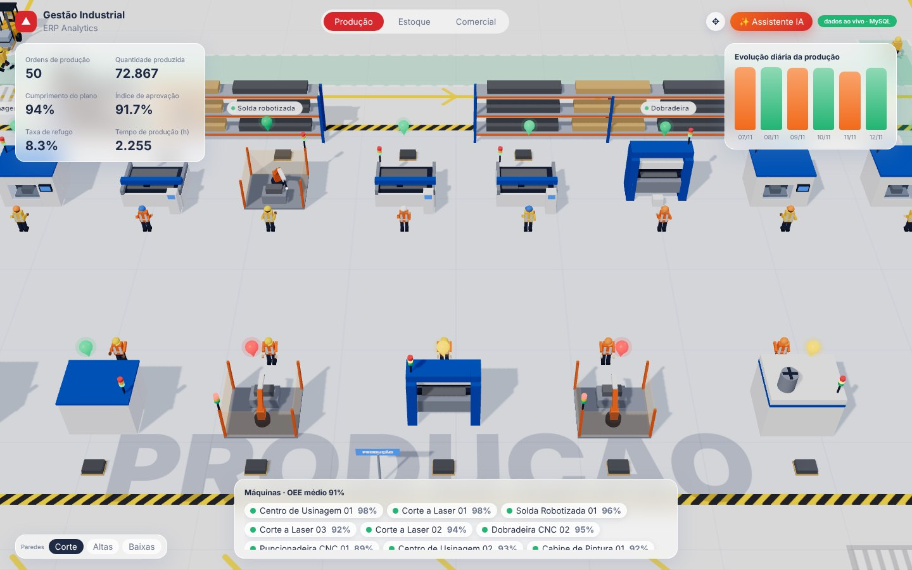
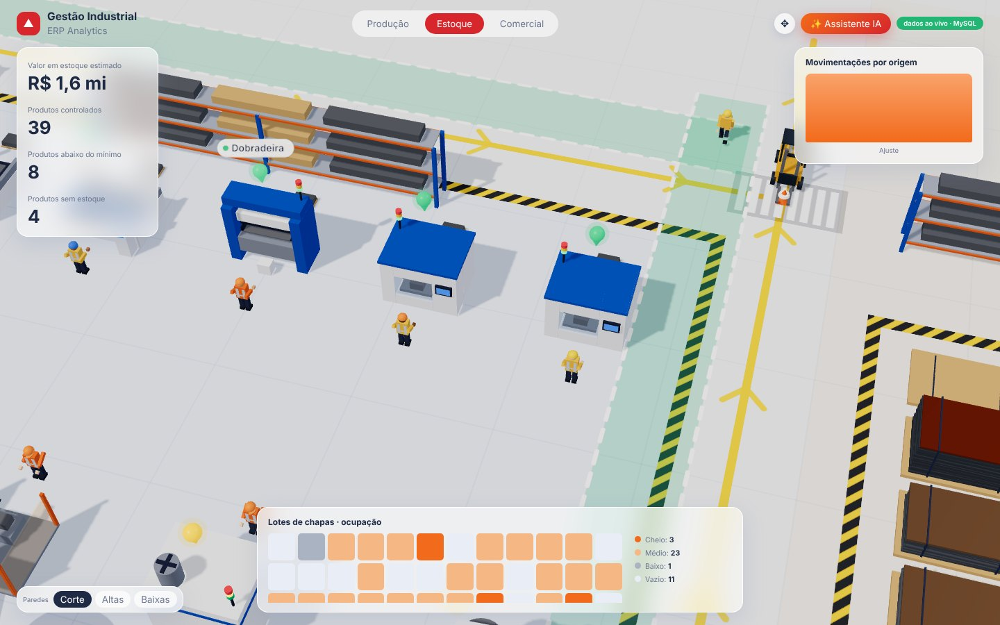
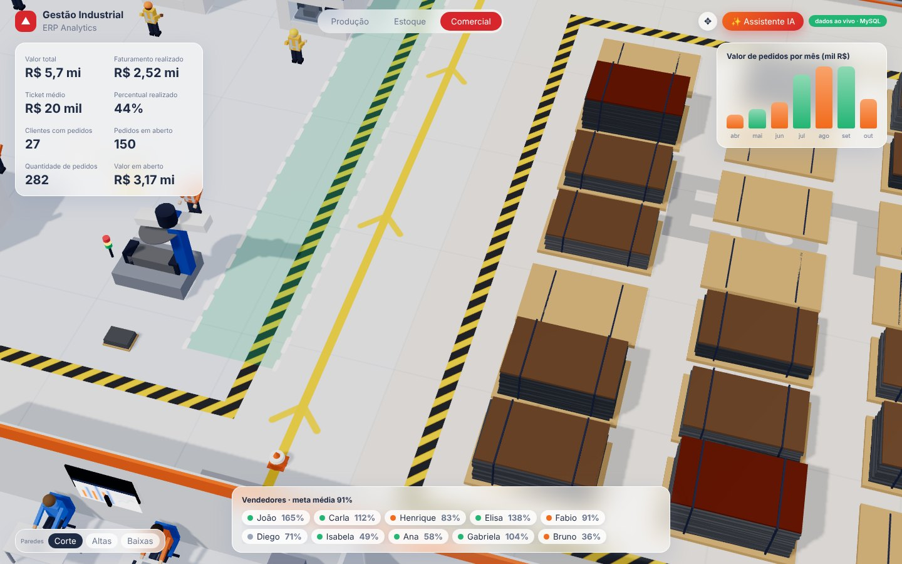
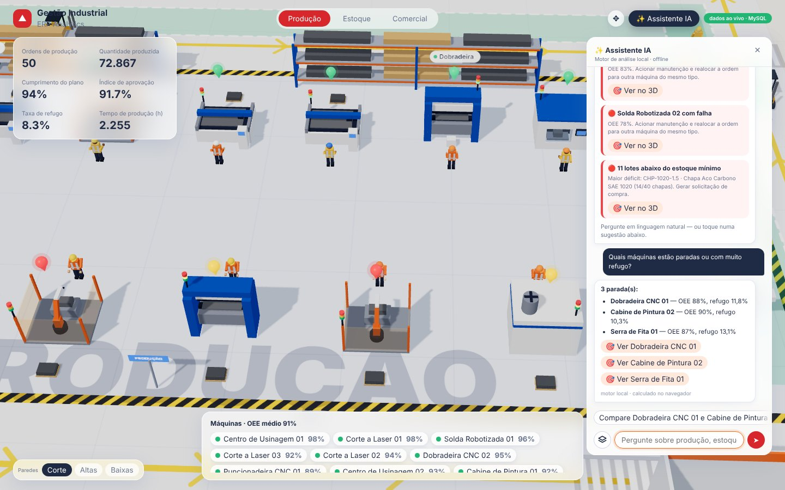
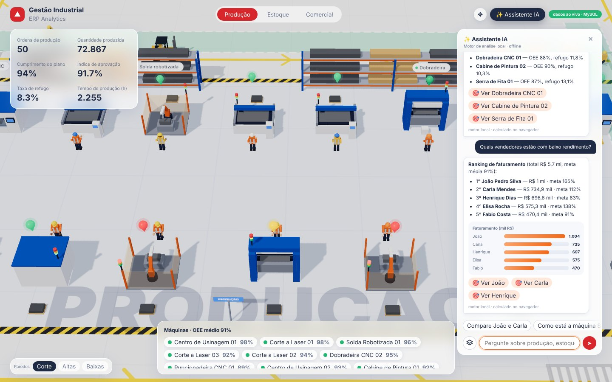

01 / 05
TypeScript · Three.js · Node.js · MySQL · IA
ERP Industrial 3D com IA
Painel industrial em 3D alimentado por uma API Node/Express e por um banco MySQL. Um assistente de IA responde em português usando function calling sobre consultas fixas e somente leitura, e leva a câmera até a máquina, o lote ou o vendedor citado.
- Front-end com TypeScript, Vite e Three.js.
- Back-end com Node.js, Express e API REST.
- Banco MySQL e TiDB Cloud para dados de demonstração.
- Assistente com function calling sobre ferramentas fixas e somente leitura.
- Visões de Produção, Estoque e Comercial; a demonstração usa dados fictícios.
15máquinas na planta 3D
10ferramentas disponíveis ao assistente
TypeScript
Vite
Three.js
Node.js
Express
API REST
 MySQL
Function calling
MySQL
Function calling
MySQL
Function calling
Nota: os dados são fictícios; status e OEE das máquinas são estimativas feitas a partir dos apontamentos, sem sensores.